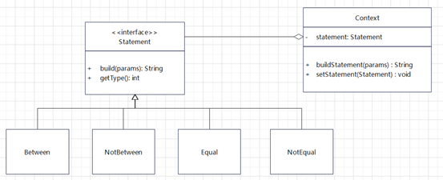

设计模式实战之策略枚举
问题描述
在开发中经常会遇到一些语句拼接的问题，如用于数据库查询的where条件或者用于逻辑判断的表达式。我们在应对这类问题的时候，直觉是使用if-else或者switch条件判断，下面是一个常见的例子：
1 | public static String buildStatement(int type, String[] value){ |
问题反思
这段拼接字符串的代码功能上没什么问题，但是过多的if-else使得代码的阅读和维护都显得不是那么友好。在上面的例子中，我们还隐藏了一个关于type的枚举。考虑扩展性如果需要新增一个类型，我们需要做：
- Type枚举新增一个类型
- 新增一个if-else 分支
在枚举里面新增一个类型相当于增加了一个单例类，符合设计原则；但是新增if-else分支则涉及到具体类逻辑的修改，不符合开闭原则。
让我们再来思考一下面临的问题：每个类型对应了一种字符串拼接的方法，要求根据高层次模块的需求可以自由切换，而不用关心拼接的细节。这正契合了策略模式的定义：
策略模式通过定义一组算法将他们封装起来，使得算法之间可以相互替换
详细设计
基于策略模式的定义，我们可以绘制出语句拼接场景下的类图。
首先定义了一个策略接口Statement，以及通用行为build。
每一个策略都定义一个实现类，如介于（Between）。在实现类的代码实现如下：
1 | //构造函数注入类型 |
环境类Context提供了切换拼接方式的入口，高层模块调用方式如下：
1 | Context context = new Context(); |
通过上面的设计，如果我们新增一个拼接类型只需要新增一个新的实现类即可，不需要涉及任何现有代码的改动，符合开闭原则。
但是如此完美的设计还是逃避不了策略模式的通病：类爆炸。当拼接类型过多的时候，系统中会出现很多的实现类，而且每个类都只有几十行代码，这在无形之中也会增加系统的维护成本。针对这种情形，我们可以引入策略枚举。因为我们知道枚举的值其实就是对应一个单例的实现，我们通常使用的枚举只是定义了这个单例的属性，如下图所示。

策略枚举可以同时定义属性和行为，看起来更加的物尽其用。具体实现就是在枚举中除了属性定义之外通过抽象方法来定义枚举的行为，而在每一个枚举值中进行实现。
1 | public enum LogicStatement{ |
如上所示，LogicStatement定义了枚举的属性和行为，在每一个枚举中通过构造器注入属性，通过重写来定义行为。通过策略枚举的实现在策略模式的基础上有效的归集了策略模式的实现类，方便管理和维护。
总结回顾
上面的例子中我们使用策略模式来实现字符串拼接的功能，主要原因是功能的封装和算法的切换符合策略模式的定义。通过策略模式的引进可以增强设计和实现的可维护性和可扩展性。对于简单策略可能带来的类爆炸问题，我们可以通过策略枚举解决。但是需要谨记使用策略枚举的前提：
- 简单策略，即策略的实现代码较少，否则会造成枚举类过大
- 策略类较多，如果策略类只有五个以内或者更少还是建议使用策略类的方式来实现，毕竟策略枚举的扩展还是要修改已有枚举类代码，并不是纯粹意义的扩展